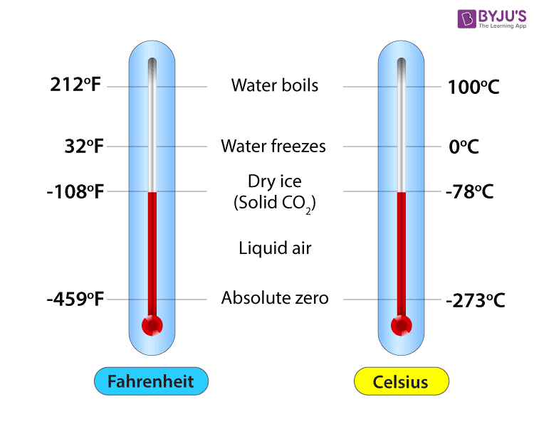

Temperature conversion calculator is made to make it easier for people to convert temperature values between different scales, like Celsius and Fahrenheit. This allows users to convert temperatures between different scales with ease and more accurate, which can be useful in a variety of industrial, scientific, and daily applications. This calculator is user-friendly, allowing you to quickly and accurately convert temperatures. So, whether you're cooking, working in a lab, or just checking the weather, it helps you switch between Celsius and Fahrenheit with no hassle, making things simpler for everyone
Celsius is, or relates to, the Celsius temperature scale (previously known as the centigrade scale). The degree Celsius (symbol: °C) can refer to a specific temperature on the Celsius scale as well as serve as unit increment to indicate a temperature interval(a difference between two temperatures or an uncertainty).
Fahrenheit is a temperature scale named after the German-Dutch physicist Daniel Gabriel Fahrenheit (1686–1736), who proposed it in 1724. In this scale, the freezing point of water is 32 degrees Fahrenheit, and the boiling point is 212 degrees, placing the boiling and freezing points of water exactly 180 degrees apart.

| Celsius (°C) | Fahrenheit (°F) |
| Scale of temperature in which 0°C represents the melting point of ice while 100°C represents the boiling of water. | Scale of temperature in which 32°F represents the melting point of ice while 212°F represents the boiling of water. |
| Absolute zero in the Celsius scale is -273.15°C | Absolute zero in the Celsius scale is -459.67°F |
| One degree of Celsius is 1.8 times larger than one degree of Fahrenheit | One degree of Fahrenheit is equal to 5/9 degrees Celsius. |